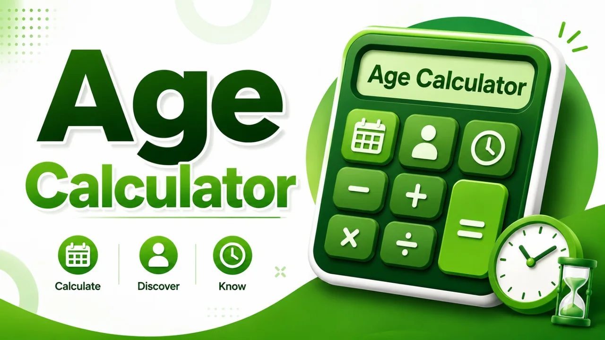

Quick answer
Use calendar age for records and anything date-sensitive. Use decimal age only when a formula or dataset explicitly asks for it, and state which year length you used.
Two answers, both correct
Calendar age counts complete years, months and days. Decimal age divides total elapsed days by an average year length. They describe the same interval and they will not agree, because one respects calendar boundaries and the other flattens them.
Neither is more accurate. Calendar age is exact about a structure; decimal age is exact about a quantity. The error is treating one as a conversion of the other, which produces figures that look precise and cannot be reproduced.
Use this guide with the right tool: Open the Age Calculator for exact chronological age in completed years, calendar months and remaining days. If the question shifts, compare it with the Decimal Age Calculator or the Age in Specific Units Calculator.
Which average year
Decimal age depends on a divisor, and there are three in common use: 365 (simple), 365.25 (Julian), and 365.2425 (Gregorian mean). Over a short span the difference is negligible; over decades it is days.
That means a decimal age is not fully specified without its convention. Two tools reporting 31.74 and 31.76 for the same person are probably both right and using different divisors. Record which one you used, or the number is not reproducible.
Where decimal age is genuinely required
Research datasets, growth-chart calculations, some clinical scoring formulas, and any statistical model that treats age as a continuous variable all want a decimal. Feeding years-months-days into a formula expecting a decimal produces nonsense.
Outside those contexts it is usually the wrong choice. A decimal age on a form, in a report or in a conversation invites misreading — 8.5 looks like it might mean eight years and five months, and often does get read that way.
Converting badly
The common error is dividing the months field by twelve and appending it: reading 8 years 6 months as 8.5. That ignores the days field entirely and assumes months are equal twelfths, which they are not. It is close enough to be plausible and wrong enough to matter in a formula.
Calculate both figures independently from the two source dates. The calendar age comes from counting units; the decimal comes from dividing total days. Deriving one from the other bakes in an approximation the original did not have.
Worked example
That same interval, 1 January 2000 to 16 August 2026, is 9,724 days, giving 26.6234 years with a 365.2425 divisor and 26.6411 with 365. Run your own dates both ways and record the divisor alongside any decimal you keep.
One interval, three divisors
The earlier section names the three average-year divisors in common use. Running one interval through all three shows how much the choice is worth. Someone born 25 December 2015, measured on 16 August 2026, has a calendar age of 10 years, 7 months and 22 days — 3,887 elapsed days. Divided by 365, that is a decimal age of 10.6493. Divided by 365.25, it is 10.6420. Divided by 365.2425, it is 10.6422.
Two things stand out. First, the two serious averages — the Julian 365.25 and the Gregorian 365.2425 — agree to three decimal places over a decade; the argument between them is worth about a fifth of a day here and only grows to days over a full lifespan. Second, the naive conversion is worse than any of them by an order of magnitude. Reading the calendar age as 10 plus 7 divided by 12 gives 10.5833, which sits about 0.06 below every true value — roughly 21 days of age, silently deleted by ignoring the 22 days in the days field and pretending the seven months were equal twelfths. Method first, convention second: get the day count right and the divisor choice is a footnote; convert from the months field and no divisor can save the figure.
The lifespan scale settles which of these arguments is worth having. Take the 80 years from 16 August 1946 to 16 August 2026 — exactly 80 years 0 months 0 days, and 29,220 elapsed days, the span containing twenty leap days. The Julian divisor returns exactly 80.0000, because this span happens to match its average perfectly. The Gregorian divisor returns 80.0016, about half a day higher. The simple 365 divisor returns 80.0548, overstating the age by roughly 19 days. So over a full lifespan the choice between the two proper averages is worth about half a day, the choice of the simple divisor is worth nearly three weeks, and the months-divided-by-twelve shortcut is not in the same conversation. Convention arguments should be sized before they are had.
Reading the Decimal Age Calculator against a dataset: a decimal age is only comparable with the figures around it if the divisor matches theirs. Where a paper, form or dataset quotes a decimal without naming its divisor, reproduce the calculation both ways — 365.25 and 365.2425. If the two agree to the precision the source quotes, which for most purposes is two decimal places, the ambiguity is real but harmless and you can proceed. If they disagree at the quoted precision, the number cannot be checked as it stands, and the honest record is the day count plus the divisor you chose, from which anyone can rebuild every variant.
Quick conversion reference
To convert calendar age to decimal age, divide the day count by 365.25 (the average Gregorian year). Common milestones:
| Calendar age | Decimal age |
|---|---|
| 6 months | 0.50 |
| 1 year | 1.00 |
| 1 year 6 months | 1.50 |
| 2 years 3 months | 2.25 |
| 16 years | 16.00 |
| 18 years | 18.00 |
| 65 years | 65.00 |
Forms that ask for decimal age — insurance applications, actuarial tables, some medical charts — almost always expect this 365.25 divisor. Using 365 instead introduces a small error that compounds over decades.
Common mistakes to avoid
- Dividing months by twelve. This drops the days field and assumes equal months. Calculate the decimal from total days instead.
- Publishing a decimal without its year length. 365, 365.25 and 365.2425 give different answers. State the divisor.
- Putting a decimal age on a form. Readers interpret 8.5 as eight years five months. Use calendar age unless a formula requires otherwise.
Use the right calculator
Use the Age Calculator for exact age in years, months and days, the Decimal Age Calculator for age as a decimal, and the Age in Specific Units Calculator for other units.

Frequently asked questions
Which divisor should I use?
Whichever the formula or dataset specifies. Where nothing specifies, 365.2425 is the Gregorian mean and the most defensible default.
Can I convert a decimal age back to years and months?
Only approximately. The calendar structure is already gone. Recalculate from the dates.
Does decimal age handle leap years?
The elapsed-day count does, exactly. The divisor is an average, which is where the convention question comes in.